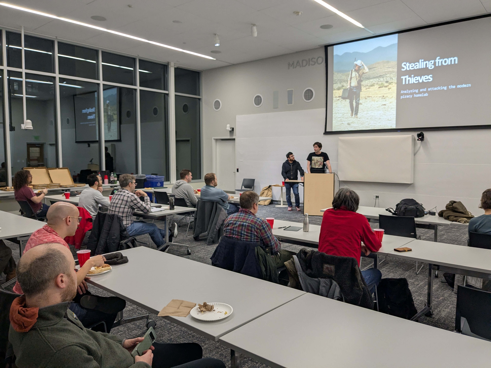

Remember running uTorrent to grab movies and music back in the day? Things have changed. Media piracy has evolved into polished, automated "homelab stacks" built on tools like Sonarr, Radarr, and their "Servarr" siblings. These stacks are assembled with dashboards, request portals, and media servers such as Plex and Jellyfin. With just a few clicks, anyone can stand up a streaming empire at home.
But that convenience comes with an attack surface. These projects share code, reuse the same defaults, and often skip security altogether. We'll demonstrate how code-level vulnerabilities, such as authentication bypasses, insecure backup handling, and exposed services, put entire homelabs at risk. Along the way, we'll trace how hobbyist automation turned into a monoculture ripe for compromise, and why, as always, putting stuff on the Internet can be a bad idea.
Nicholas Anastasi is the Director of Technical Operations at Sprocket Security where he hacks on companies and code. In his free time, Nicholas is an avid ultra distance runner with a serious addiction to candy. Nicholas has spoken at several conferences on various topics such as social engineering, password spraying and Active Directory attack paths.